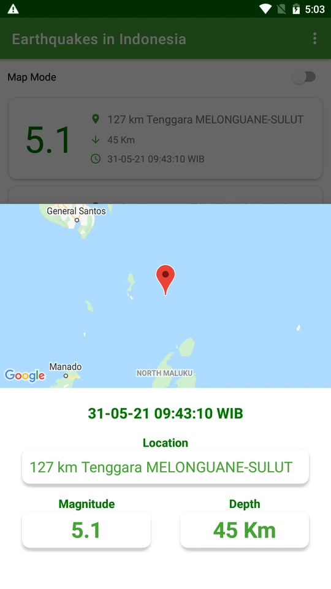
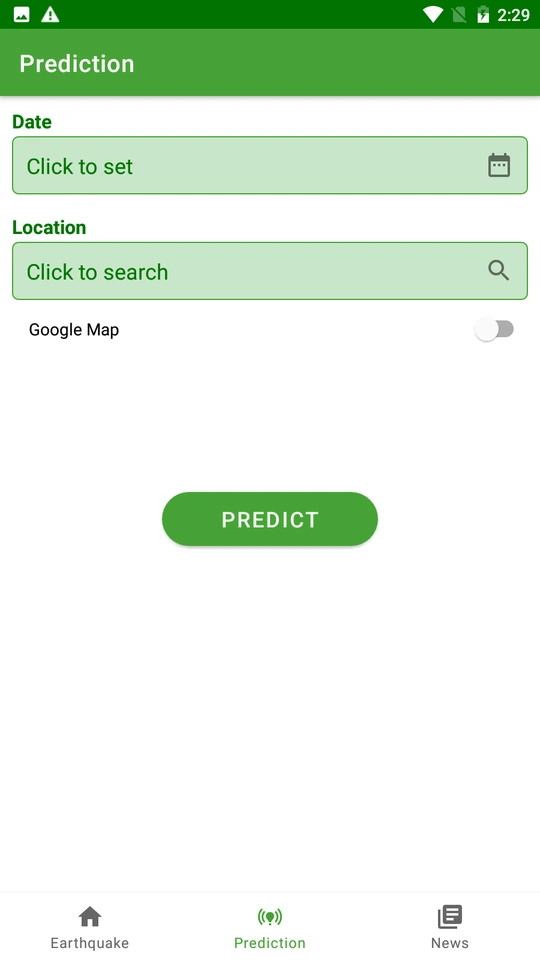
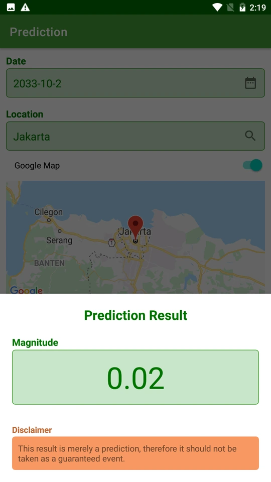
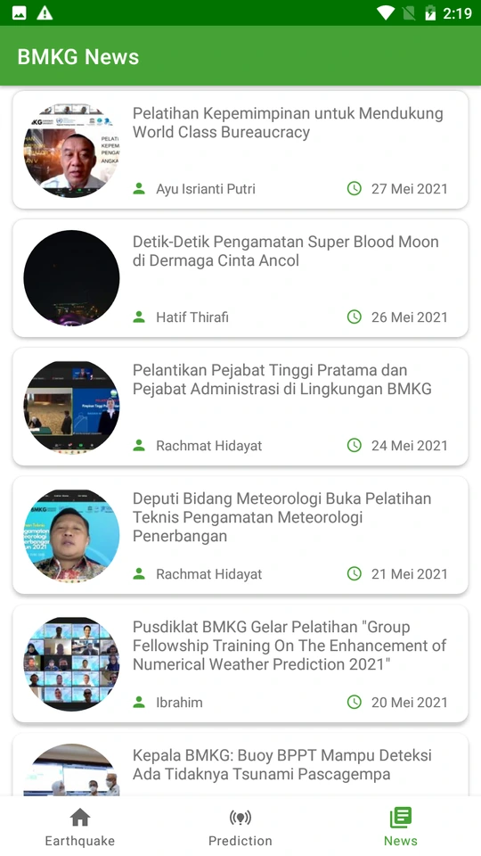

Epicentre.
An Android application for earthquake information and BMKG news, built with my Google Bangkit 2021 capstone team.
Inside the app
Final presentation · 2021






Original app screenshots extracted from the team’s 2021 final presentation. They show the earthquake list and map, location details, prediction flow, and BMKG news.
The application
The earthquake screen lists magnitude, location, depth, and dates, with a map view and individual location details. The prediction flow accepts a date and location, while the news screen presents BMKG articles.
The presentation also documents a prototype prediction result. This was an experimental capstone feature; the original screen includes its own disclaimer.
My contribution
I was responsible for the cloud infrastructure on Google Cloud Platform, working alongside the team building the Android application for Google Bangkit 2021.
The project brought together application development and cloud infrastructure in a shared capstone delivery.